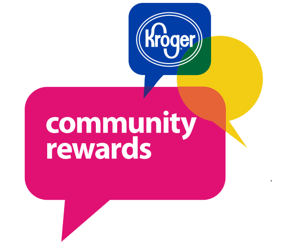

About Us
Our Vision:
The Art With a Heart vision is that all children, regardless of background, have the opportunity to improve their quality of life through artistic expression.
Our Mission:
The mission of Art With a Heart is to provide equitable opportunities for high quality visual arts education to Indianapolis children and youth.
We provide hands-on visual arts experiences that educate and inspire children in Indianapolis. Our programs uniquely reinforce academics within the artistic experience and strive to instill confidence in our kids, benefiting them in both school and life.
Our Method:
Art With a Heart positively impacts the lives of thousands of children, and thereby builds better communities through art, education and love.
Using standards-driven fine art curriculum, Art With a Heart offers programming for children both in school and out of school. We strive to teach skills that benefit children in both school and life. Lesson plans are designed to encourage critical thinking and build problem-solving skills. Curricula include state-mandated educational standards. Low student:teacher ratios (15:1) combined with numerous volunteers help us provide the attention our students need. We teach on-site at various locations from IPS classrooms to neighborhood centers to our own studio at 37 Place.
About Our Students:
- Over 3,500 students served annually
- Ages range from Pre-K through 12th Grade
- 70% of Art With a Heart students come from families who identify as at or below the federal poverty line
- 60% Black, 20% Latino, 20% Caucasian
The Art With A Heart Story
Founder and art teacher Carol Conrad created Art With a Heart in 2002 to provide hands-on visual art experiences that educate, inspire, and give hope to children. By 2005, Art With a Heart started with two summer camps and quickly grew. Within 3 years, AWaH was running programming year-round and adding after school programs during the school year. Around the same time, AWaH opened its first studio and began offering Saturday classes which grew into the Honors programs that serves the most artistically interested students. AWaH launched a kindergarten program in 2007 in response to the state’s decision to fund all-day kindergarten. In 2009, Carol Conrad retired, placing the organization in the hands of the Board of Trustees and a new Executive Director.
Staff
The staff at Art With a Heart are driven by a desire to bring top quality programs to all students regardless of their background. We love seeing students discover the joy of engaging in, creating and understanding art. This is a small, highly motivated, highly trained and highly committed team. Read on to learn more about the team that teachers want to work with!
Steven Stolen
Managing Director
sstolen@artwithaheart.us
Faren Jones
Development Director
fjones@artwithaheart.us
Kelly Bradbury
Volunteer Manager
volunteer@artwithaheart.us
Laura Hurrle
Site Director
lhurrle@artwithaheart.us
Monica Sanchez
Site Director
msanchez@artwithaheart.us
Contact Us
Our studios are conveniently located just off the corner of Keystone Avenue and 25th Street in Indianapolis.
2605 East 25th Street
Suite 301
Indianapolis, Indiana 46218
Phone Number: (317) 602-7222
Fax: (317) 602-7227
Sign Up For Email Updates!
Programs
Setting the Standard for Art
Art With a Heart offers a variety of art programs for children who want to learn and explore through art instruction and education in urban neighborhoods throughout Indianapolis. We offer several studio programs for students second through twelfth grade, as well as a unique in-school professional development program that helps classroom teachers administer an integrated arts curriculum to early childhood classrooms. During the summer months, we provide a full-day, immersive art camp experience. Student art galleries are held at the conclusion of each programming session to celebrate their successes and engage parents and community members.
Our Program Offerings
Many children who come to Art With a Heart have had little exposure to the arts; some only having experience with basic drawing materials. By giving these students the opportunity to create with high quality art materials, we expose them to more than one way of looking at and creating art. Art With a Heart is dedicated to introducing children to the joy that comes from creating art in a safe, secure and enriching environment.
Our Core Values
- Quality art starts with quality materials
- Low student/teacher ratios (15:1), which allow us to give more individual attention
- The emotional well-being of our students is of utmost importance
- Student safety is paramount
- The joy of the creative process is always to be encouraged
- Students should be held to high expectations in order to do their best work
- State standards for education should and will be incorporated into lesson plans
- Students can/will be challenged to learn creativity and applying problem-solving skills
- Artistic skill/technique is first demonstrated, then practiced, reviewed and tested
- Students can/should be taught leadership development, team building and cooperation skills
- Students can/should be taught to focus and follow through on projects to completion
Summer Camps
We are proud to announce that we have extended our Art With a Heart summer camp offerings to include more available weeks as well as single day camps. We have brought back some popular favorites and added lots of new options, too. So much to choose from!

Homeschool
Meet The Instructor: Mrs. Green
I have loved art ever since I can remember. As an adult, I continue to explore and create while sharing my passion with students through thoughtful and enthusiastic instruction. I graduated from Taylor University in 2004 and earned my master of education degree from Indiana Wesleyan in 2009. The first seven years of my career I spent teaching in elementary and middle schools in Tennessee and Indiana. In 2011, I left the public school system to explore opportunities to teach art that would allow me to stay at home with my three children. It’s been a wonderful journey and I am thrilled to be partnering with Art With a Heart to serve the needs of homeschool students in Indianapolis!
2019-2020 Classes
Registration is currently closed. If you have questions, please email AWAH@artwithaheart.us with questions
The Elements of Art
At the AWaH Homeschool program, students receive excellent art instruction, empowering young artists to grow in their artistic abilities, while making new friends, and having lots of fun! Students will be exposed to a broad variety of art materials and processes. Our focus for the 2019-2020 school year is: The Elements of Art. We'll be exploring the fundamental 'ingredients' of ART (Line, Shape, Color, Value, Texture, and Form) with an all-star lineup of projects that expose these young artists to a wide range of materials and processes. Students receive excellent art instruction each and every week while making new friends, growing in their artistic abilities, and having a lot of fun!
Library Workshops
Thanks to a partnership with the Indianapolis Public Library Foundation, we're able to offer workshop programming at no cost to the student! Registration through the library is required so we know how many supplies each workshop will require. Visit attend.indypl.org/events to find the date/location that fits your schedule and register!
Fall 2019: Finger Knitting Scarf Workshop
- Saturday, October 5 @ 2pm – Irvington Branch
- Monday, October 7 @ 1pm – Warren Branch
- Wednesday, October 9 @ 1pm – Beech Grove Branch
- Tuesday, October 15 @ 11am – Learning Curve at Central Library
- Tuesday, October 15 @ 2pm – Garfield Park Branch
- Tuesday, October 15 @ 4:30pm – Brightwood Branch
- Tuesday, October 15 @ 5pm – Haughville Branch
- Wednesday, October 16 @ 11am – College Avenue Branch
- Wednesday, October 16 @ 2pm – West Indianapolis Branch
- Thursday, October 17 @ 10:30am – East Washington Branch
- Thursday, October 17 @ 2pm – Eagle Branch
- Friday, October 18 @ 10:30am – Michigan Road Branch
- Friday, October 18 @ 3pm – Decatur Branch
- Monday, October 21 @ 5:30pm – Glendale Branch
- Wednesday, October 23 @ 6pm – Lawrence Branch
- Thursday, October 24 @ 3pm – Fountain Square Branch
- Saturday, October 26 @ 2pm – Wayne Branch
- Saturday November 9 @ 2pm – Nora Branch
- Tuesday, December 3 @ 4pm – East 38th Street Branch
- Saturday, December 7 @ 11am – Pike Branch
- Saturday, December 14 @ 11am – Southport Branch
Get Involved
Helping out a nonprofit can mean many different things. Maybe you'd like to volunteer. Maybe you'd like to run a supply drive at work. Or maybe you'd like to donate toward the cause. We value and appreciate all of our supporters!If you don't find the information you're looking for here, please drop us a line!
Help Our Cause
How to Help for Free
Kroger Community Rewards
Sign up for Kroger Community Rewards. You keep your fuel points and all your discounts. Every time you scan your card, Kroger will make a donation to Art With a Heart!
Here’s how to sign up:
- Visit www.krogercommunityrewards.com
- Sign in or create an account
- Choose your Art With a Heart as your nonprofit of choice! (Our code is NF171)
AmazonSmile

AmazonSmile is a website operated by Amazon with the same products, prices, and shopping features as Amazon.com. The difference is that when you shop on AmazonSmile, the AmazonSmile Foundation will donate 0.5% of the purchase price of eligible products to the charitable organization of your choice.
Here’s how to use AmazonSmile:
- Visit smile.amazon.com
- Sign in with your Amazon.com credentials
- Choose a Art With a Heart as your charitable organization.
- Shop as usual!
Other Ways to Help
We are always in need of supplies! If you interested in buying supplies, check out our Amazon Wish List here
If you are interested in donating to our charity, please visit our donate page
Donate Now!
A donation to Art With a Heart provides art supplies and individualized instruction, high-quality curricula, and so much more to children in Indianapolis. Any and all donations are accepted and appreciate any amount you can give. Your donation helps us to encourage our children's success in life through their success in art. Thank so much for your consideration!